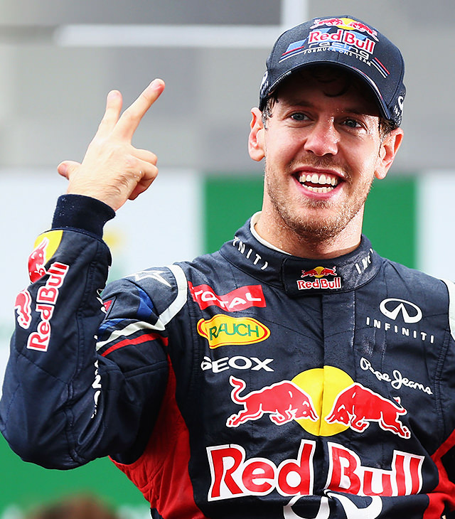

¡Mandanos tus opiniones!
¡Mandanos tus opiniones!
También puedes llamarnos por teléfono directamente
902 12 21 22
Sebastian Vettel
Sebastian Vettel (Heppenheim, Hesse, Alemania; 3 de julio de 1987) es un piloto alemán de automovilismo de velocidad. Llegó formando parte del Equipo Júnior de Red Bull desde los 11 años. Ha ganado cuatro títulos mundiales de Fórmula 1 con el equipo Red Bull en 2010, 2011, 2012 y 2013, más tres subcampeonatos en 2009, 2017 y 2018 estos dos últimos con el equipo Ferrari. Debutó en 2007 con el equipo BMW Sauber y participó en 2008 con el equipo Toro Rosso logrando su primera victoria en el Gran Premio de Italia de 2008. Desde 2021 es piloto de la escudería Aston Martin.
Se convirtió el 27 de octubre de 2013 en el piloto más joven de la historia en ser tetracampeón de la «máxima categoría» del automovilismo. Actualmente, lleva 53 victorias, 120 podios y 57 pole position. Es el tercer piloto con más Grandes Premios ganados en la historia. Iguala a Alain Prost en número de títulos mundiales, siendo superado por Juan Manuel Fangio (5), Lewis Hamilton (7) y Michael Schumacher (7).
¡Mandanos tus opiniones!
También puedes llamarnos por teléfono directamente
902 12 21 22